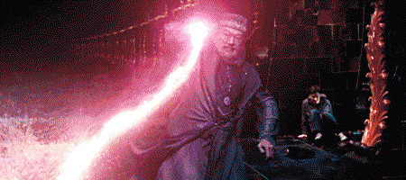
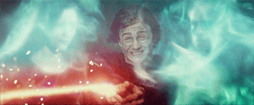
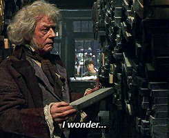
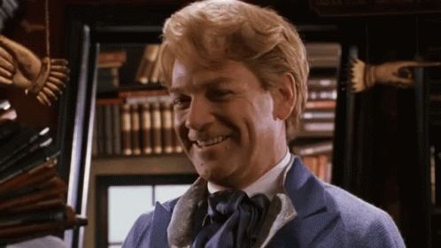
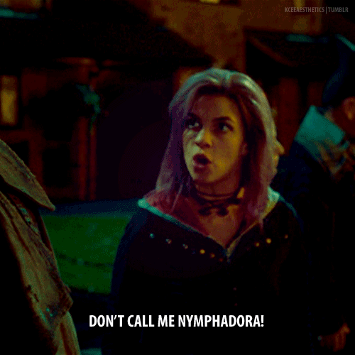
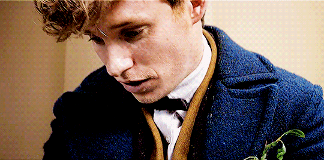
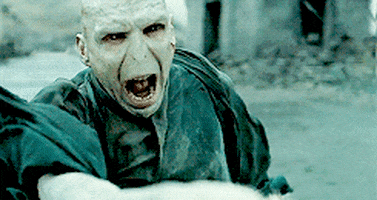
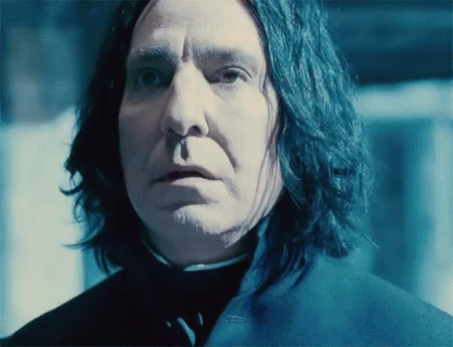

Gryffindor was one of the four Houses of Hogwarts School of Witchcraft and Wizardry and was founded by Godric Gryffindor. Gryffindor instructed the Sorting Hat to choose students possessing characteristics he most valued, such as courage, chivalry, and determination,[4] to be sorted into his house. The emblematic animal was a lion, and its colours were scarlet and gold.[2] Sir Nicholas de Mimsy-Porpington, also known as "Nearly Headless Nick", was the House ghost.[6] Gryffindor corresponded roughly to the element of fire, and it was for this reason that the colours scarlet and gold were chosen to represent the house.[2] The colour of fire corresponded to that of a lion as well, with scarlet representing the mane and tail and gold representing the coat.
Professor Albus Percival Wulfric Brian Dumbledore, O.M. (First Class), Grand Sorc., D. Wiz., X.J. (sorc.), S. of Mag.Q.[24] (c. Summer[1] 1881[3] - 30 June, 1997)[3] was an English half-blood wizard. He was the Defence Against the Dark Arts Professor, later the Transfiguration Professor, and later the Headmaster of Hogwarts School of Witchcraft and Wizardry. He also served as Supreme Mugwump of the International Confederation of Wizards (1995) and Chief Warlock of the Wizengamot (-1995; 1996-1997). A Muggle-supporting wizard, he was considered to have been the greatest wizard of modern times, perhaps of all time. He was the son of Percival and Kendra Dumbledore, and the elder brother of Aberforth and Ariana. His father died in Azkaban when Albus was young, while his mother and sister were later accidentally killed. His early losses greatly affected him early on, even at his death many years later, but, in turn, made him a better person.
Harry James[58] Potter (b. 31 July 1980)[1] was an English half-blood[2] wizard, and one of the most famous wizards of modern times. The only child and son of James and Lily Potter (née Evans), Harry's birth was overshadowed by a prophecy, naming either himself or Neville Longbottom as the one with the power to vanquish Lord Voldemort, the most powerful and feared Dark Wizard in the world. After half of the prophecy was reported to Voldemort, courtesy of Severus Snape, Harry was chosen as the target due to his many similarities with the Dark Lord. In turn, this caused the Potter family to go into hiding. Voldemort made his first attempt to circumvent the prophecy when Harry was a year and three months old. During this attempt, he murdered Harry's parents as they tried to protect him, but this unsuccessful attempt to kill Harry led to Voldemort's first downfall. This downfall marked the end of the First Wizarding War, and to Harry henceforth being known as "The Boy Who Lived",[5] as he was the only known survivor of the Killing Curse due to being magically protected by his mother's loving sacrifice. As per the terms of the prophecy, this attempt on his life also established him, not Neville, as Voldemort's nemisis.

Ravenclaw was one of the four Houses of Hogwarts School of Witchcraft and Wizardry. Its founder was the medieval witch Rowena Ravenclaw.[1] Members of this house were characterised by their wit, learning, and wisdom. The emblematic animal symbol was an eagle, and blue and bronze were its colours.[6] The Head of Ravenclaw was Filius Flitwick,[7][9] and the House ghost was the Grey Lady,[6] real name Helena Ravenclaw, daughter of Rowena.[10] Ravenclaw corresponded roughly to the element of air,[17] and it was for that reason that the House colours were chosen; blue and bronze represented the sky and eagle feathers respectively, both having much to do with air.[18] The Ravenclaw points hourglass contained blue sapphires.
Garrick Ollivander (b. 25 September,[1] pre-1909[2]) was a half-blood[1] wizard who was the proprietor of Ollivanders in Diagon Alley during most of the 20th century. Ollivander was widely considered the best wandmaker in the world, and many wizards and witches bought their wands from him. In 1996, Ollivander was captured and tortured by Lord Voldemort. He was rescued in 1998 by Harry Potter, Ron Weasley, Hermione Granger, and Dobby. He imparted important information regarding wandlore to Harry, it helped him in his understanding of the Deathly Hallows.
Professor Gilderoy Lockhart, O.M. (Third Class), (b. 26 January,[1][2] 1964)[3] was a half-blood wizard, a Ravenclaw student at Hogwarts School of Witchcraft and Wizardry, and later a famous wizarding celebrity who authored many books on dark creatures and his supposed encounters with them.[1] Prior to his tenure as Professor of Defence Against the Dark Arts at Hogwarts School of Witchcraft and Wizardry, specifically during the 1992–1993 school year, he received many prestigious awards, such as Order of Merlin, Third Class; Honorary Member of the Dark Force Defence League; and the Witch Weekly's Most Charming Smile Award five times in a row.[5] He invented an Occamy egg yolk shampoo at some point. This shampoo, however, was too dangerous and expensive for open market; it subsequently became his dream to be able to market and sell the product.[14] His favourite colour was lilac.[5]

Hufflepuff was one of the four Houses of Hogwarts School of Witchcraft and Wizardry.[14] Its founder was the medieval witch Helga Hufflepuff.[1] Hufflepuff was the most inclusive among the four houses, valuing hard work, dedication, patience, loyalty, and fair play rather than a particular aptitude in its members.[5][7] The emblematic animal was a badger,[3] and yellow and black were its house colours.[2] The Head of Hufflepuff was Pomona Sprout,[9] and the Fat Friar was the House's patron ghost.[7] Hufflepuff corresponded roughly to the element of earth,[4] and it was for that reason that the House colours were chosen: yellow represented wheat, while black was emblematic of soil.[2] The Hufflepuff point hourglass contained yellow diamonds.[15] Students sorted into Hufflepuff often demonstrated exceptional abilities in Herbology, owing to their correspondence to earth.
Nymphadora "Dora" Lupin (née Tonks) (c. 1973[1]–2 May, 1998), more commonly known as Tonks, was a British half-blood witch and a Metamorphmagus. She was the only child of Ted and Andromeda Tonks (née Black). Tonks attended Hogwarts School of Witchcraft and Wizardry from 1984 to 1991 and was Sorted into Hufflepuff House. She was in the same year at Hogwarts as Gryffindor Charlie Weasley.
Newton Artemis Fido "Newt" Scamander,[2] O.M. (Second Class), (b. 24 February,[1] 1897)[2] was an English wizard, famed Magizoologist and the author of Fantastic Beasts and Where to Find Them. Early in life, Scamander developed an interest in magical creatures, influenced by his mother's breeding of hippogriffs. He attended Hogwarts School of Witchcraft and Wizardry, where he was sorted into Hufflepuff House. While at Hogwarts he was sentenced to expulsion, though Albus Dumbledore, who had been his Defence Against the Dark Arts instructor, recognised his innocence, and objected strongly.
Slytherin was one of the four Houses at Hogwarts School of Witchcraft and Wizardry, founded by Salazar Slytherin.[1] In establishing the house, Salazar instructed the Sorting Hat to pick students who had a few particular characteristics he most valued. Those characteristics included cunning, resourcefulness, leadership, and ambition. Many Slytherin students tended to clique together, often acquiring leaders, which further exemplified Slytherin's ambitious qualities. Examples of these included Draco Malfoy's gang, Merula Snyde's gang, Pansy Parkinson's gang and the Death Eaters. The founder highly valued and favoured pure-blood students and the Sorting Hat admitted that it could be a factor when being sorted.[1][17] Students of any blood status could be placed in the house. However, a Muggle-born student from that house was considered to be quite rare.[18] The emblematic animal of the house was a snake and the house's colours were green and silver. There were two notable heads of the house; Horace Slughorn took the role twice (first leaving in 1981 and then taking the role again from 1997 until leaving before 2016),[11] and Severus Snape.[12] The patron ghost of the house was the Bloody Baron.[9] Slytherin corresponded roughly with the element of water due to serpents being commonly associated with the sea and lochs in western European mythology, as well as serpents being physically fluid and flexible animals.[5] Similarly, in Celtic mythology, water is seen as a portal to another world, leading some to speculate that the element was chosen to symbolise many Slytherins' hope for a pure-blood only community. The colours also corresponded with waters around lakes and lochs often being green, and silver being often associated with grey rainwater.
Tom Marvolo Riddle (31 December 1926[18] – 2 May 1998), later known as Lord Voldemort or, alternatively as You-Know-Who, the Dark Lord, or He-Who-Must-Not-Be-Named was an English half-blood[3] wizard considered to have been the most powerful and dangerous Dark Wizard of all time.[19][20] He was amongst the greatest wizards to have ever lived, often considered more powerful or equal to Albus Dumbledore.[21][22][23] The only child and son of Tom and Merope Riddle (née Gaunt), Riddle was raised in the Muggle-run Wool's Orphanage after his father abandoned his new family on the streets of London when the influence of her magic was lifted, and his mother died moments after giving birth to and naming him after his father and maternal grandfather, Marvolo Gaunt.
Professor Severus Snape (9 January, 1960[1] – 2 May, 1998)[2] was an English half-blood[3] wizard serving as Potions Master (1981-1996), Head of Slytherin House (1981-1997), Defence Against the Dark Arts professor (1996-1997), and Headmaster (1997-1998) of the Hogwarts School of Witchcraft and Wizardry as well as a member of the Order of the Phoenix and a Death Eater. His double life played an extremely important role in both of the Wizarding Wars against Voldemort. The only child of Muggle Tobias Snape and Gobstones witch Eileen Snape (née Prince), Severus was raised in the Muggle dwelling of Spinner's End, which was in close proximity to the home of the Evans family, though in a poorer area. He met Lily and Petunia Evans when he was nine. He fell deeply in love with Lily upon their meeting and became a close friend of hers.[7]